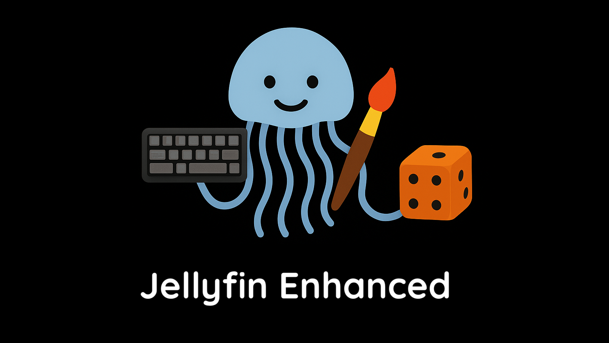

Jellyfin Enhanced¶
Make Jellyfin yours with better browsing, playback and connected services.
JE adds browsing and playback tools to your server's Jellyfin web interface. Selected server features also work with native clients.
Install Quick start All features

Start here¶
- Installation Install the matching build and restart Jellyfin.
- Quick start Choose your first features and personal settings.
- Settings overview Find admin controls, personal preferences, storage and backups.
- Compatibility Check server versions, clients and optional dependencies.
- JE pages & tabs Choose how you reach JE’s seven pages.
- Troubleshooting Fix installation, loading and connection problems.
Features¶


Compatibility¶
- Jellyfin 12.x Supported, with its own build
- Jellyfin 10.11.x Supported, with its own build
- Web features Need your server's web interface
- Playback tools Need your server's web player
Reference & help¶
- CSS customization Restyle JE using documented selectors.
- API Explore authentication, endpoints and request formats.
- Community analytics Review optional reporting and browse aggregate statistics.
- Project structure Find server code, client modules, assets and data files.
- FAQ Answers to common setup and feature questions.
- Report issues Include details needed to reproduce a problem.
- Discord Get help and discuss JE with the community.
Feature requests Support & community About JE Related projects